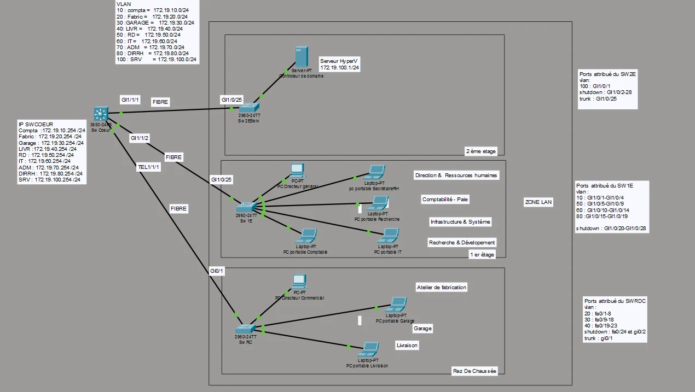
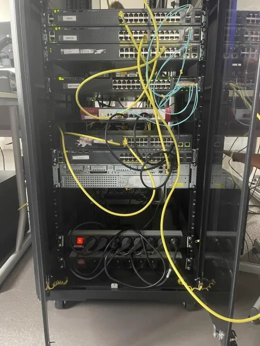
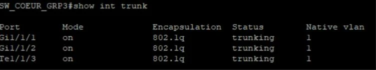
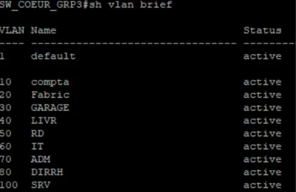
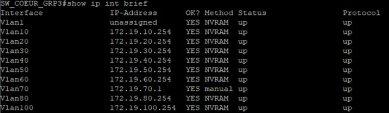
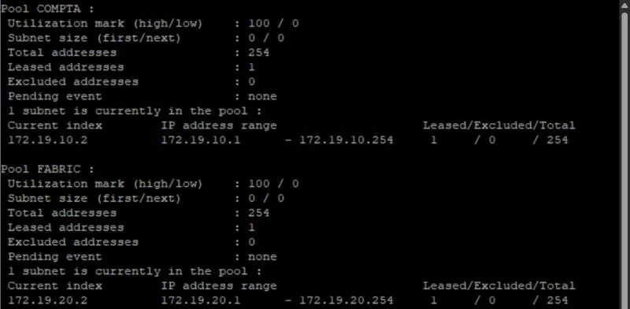
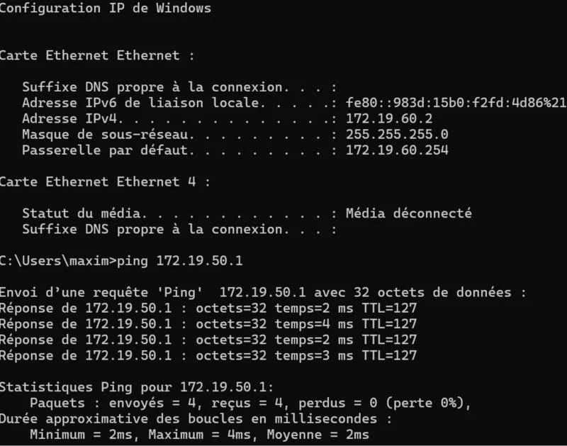
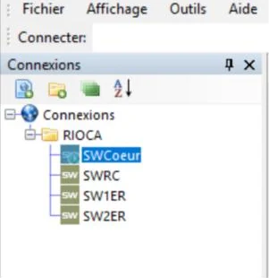
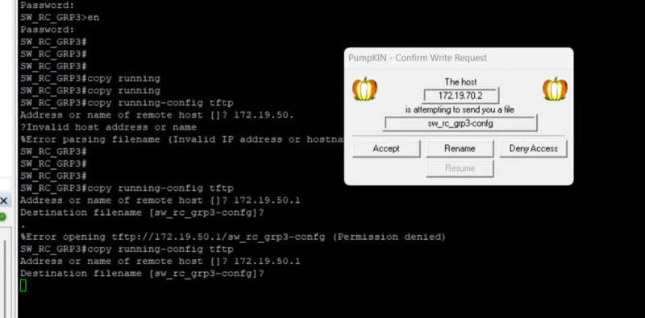
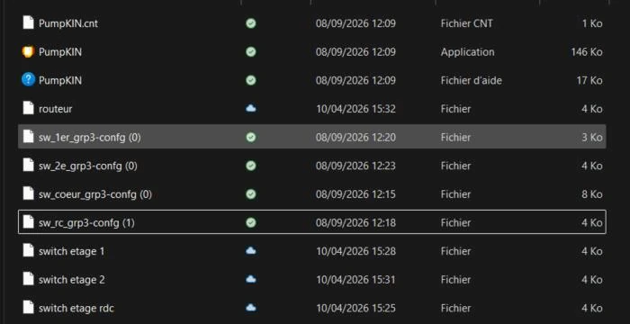

01Contexte
Ce premier atelier de 2e année n'était pas noté, mais il a posé toutes les fondations des projets suivants : construire, à partir de matériel réel, la maquette du réseau local de l'entreprise fictive RIOCA. Les ateliers Infra-Site (DMZ et pare-feu) puis ArchiSite (serveur web sécurisé) se sont ensuite greffés sur ce réseau.
Le travail s'est fait en binôme et a été suivi sur un tableau Trello, une carte par étape de la lettre de mission :
- schéma réseau ;
- récupération et réinitialisation des quatre switchs ;
- montage de la baie, câblage et repérage des ports ;
- configuration de la zone LAN ;
- administration à distance centralisée ;
- sauvegarde des configurations.
02Schéma réseau
Le schéma logique, réalisé sous Packet Tracer, place un switch cœur au centre, relié en fibre à un switch par étage. Chaque service dispose de son VLAN, avec un réseau en 172.19.x.0/24 :
| VLAN | Service | Réseau | Switch |
|---|---|---|---|
| 10 | Comptabilité | 172.19.10.0/24 | 1er étage |
| 20 | Fabrication | 172.19.20.0/24 | Rez-de-chaussée |
| 30 | Garage | 172.19.30.0/24 | Rez-de-chaussée |
| 40 | Livraison | 172.19.40.0/24 | Rez-de-chaussée |
| 50 | Recherche et développement | 172.19.50.0/24 | 1er étage |
| 60 | IT | 172.19.60.0/24 | 1er étage |
| 70 | Administration des équipements | 172.19.70.0/24 | Tous |
| 80 | Direction et RH | 172.19.80.0/24 | 1er étage |
| 100 | Serveurs | 172.19.100.0/24 | 2e étage |


03Baie et câblage
Les quatre switchs ont d'abord été récupérés et remis à zéro en suivant la documentation fournie, pour repartir de configurations vierges. Ils ont ensuite été fixés dans la baie avec une tablette coulissante.
Le montage a pris plus de temps que prévu : l'étagère a dû être déplacée plusieurs fois pour trouver un emplacement stable au switch cœur, avec peu d'outils et des vis abîmées.
Chaque équipement a été étiqueté selon le plan de nommage (switch cœur, 2e étage serveurs, 1er étage, rez-de-chaussée), et les ports ont été repérés dans un document pour savoir quel câble relie quoi.


04VTP, VLAN et trunks
Chaque switch reçoit un nom et un mot de passe sur le port console, pour qu'on ne puisse pas le configurer simplement en s'y branchant.
Pour ne pas créer les VLAN quatre fois, nous avons utilisé VTP : le switch cœur est serveur du domaine RIOCA, les trois autres sont clients et reçoivent automatiquement les VLAN qu'il crée.
! Switch cœur
vtp domain RIOCA
vtp mode server
vlan 10
name compta
! ... même logique pour les VLAN 20 à 100
! Switchs d'étage
vtp domain RIOCA
vtp mode clientLes liaisons entre le switch cœur et les switchs d'étage passent en trunk 802.1Q, pour transporter tous les VLAN sur un seul câble :




Les ports des postes sont ensuite affectés au VLAN de leur service, en mode accès. Exemple pour la comptabilité au 1er étage ; la même logique a été appliquée aux autres services :
interface range GigabitEthernet1/0/1-4
switchport mode access
switchport access vlan 10Enfin, chaque switch a une adresse d'administration dans le VLAN 70 (172.19.70.1 pour le switch cœur, puis les suivantes pour les switchs d'étage), pour pouvoir le gérer à distance.
05Routage inter-VLAN et DHCP
Le switch cœur est un switch de niveau 3 : il route lui-même entre les VLAN. Chaque VLAN a une interface virtuelle (SVI) en 172.19.x.254, qui sert de passerelle aux postes du service.
ip routing
interface vlan 10
ip address 172.19.10.254 255.255.255.0
! ... même logique pour les autres VLAN

Le switch cœur distribue aussi les adresses des postes : un pool DHCP par VLAN client (les serveurs du VLAN 100 restent en adresses fixes).
ip dhcp pool COMPTA
network 172.19.10.0 255.255.255.0
default-router 172.19.10.254
! ... même logique pour les autres VLAN clients

Test : un poste du VLAN IT reçoit son adresse (172.19.60.2, passerelle 172.19.60.254) et joint un poste du VLAN Recherche et développement.


06Administration centralisée
Pour gérer les quatre switchs depuis le poste IT sans se brancher sur chacun, nous avons comparé plusieurs outils et retenu mRemoteNG, gratuit et capable de regrouper toutes les connexions au même endroit.
- Sur chaque switch, les lignes VTY demandent un mot de passe (login) et acceptent les connexions à distance.
- Dans mRemoteNG, un dossier RIOCA regroupe une connexion par switch, vers son adresse du VLAN 70.


À ce stade les connexions se faisaient en Telnet, qui circule en clair. Le projet Infra-Site les a ensuite passées en SSH, avec un accès réservé au service IT.
07Sauvegarde des configurations
Un serveur TFTP (PumpKIN) tourne sur le poste d'administration. Depuis chaque switch, la commande copy running-config tftp lui envoie la configuration en cours.




Les sauvegardes étaient alors lancées à la main ; Infra-Site les a automatisées à horaires fixes.
08Infrastructure Windows
Sur ce réseau, trois missions ont mis en place les serveurs du VLAN 100 et les postes des utilisateurs :
| Élément | Réalisation |
|---|---|
| Hyperviseur | Windows Server et le rôle Hyper-V sur un serveur physique (AMD Ryzen 5, 32 Go de RAM) : système sur un SSD, machines virtuelles sur un second SSD dédié, commutateur virtuel externe relié à la maquette. Adresse 172.19.100.1. |
| Contrôleur de domaine | Machine virtuelle Windows Server promue contrôleur de domaine Active Directory et serveur DNS du domaine RIOCA.LOCAL. Adresse 172.19.100.2. |
| Postes clients | Poste Windows d'un VLAN utilisateurs : adresse reçue du switch cœur par DHCP, puis jonction au domaine RIOCA.LOCAL. |
09Bilan
À la fin de l'atelier, le réseau local de RIOCA était fonctionnel : services cloisonnés dans leurs VLAN, routage et adresses gérés par le switch cœur, switchs administrables à distance et sauvegardés, domaine Active Directory en place.
C'est sur cette base qu'Infra-Site a ajouté une DMZ, une zone Internet et un pare-feu, en durcissant au passage ce qui avait été posé ici : SSH à la place de Telnet, ACL entre les services, sauvegardes automatiques.